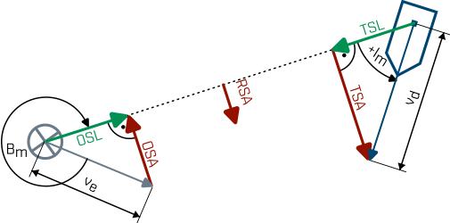

Die resultierende Quergeschwindigkeit ist die Summe von eigener und Gegnerquergeschwindigkeit. Es gilt somit:

Abbildung 1: Die RSA in dieser Abbildung ist positiv. Aufgrunddessen zeigt der Vektor der RSA nach rechts vom Eigenboot aus betrachtet. Dies kommt zustande, da die positive TSA größer ist als die negative OSA.
Die RSA hat genauso wie OSA und TSA ein Vorzeichen. Ist die RSA positiv, dann geht die Bearingrate nach rechts und umgekehrt. Ist die RSA zum Beispiel 0, dann muss auch die Bearingrate 0 sein. Man spricht in diesem Fall von einer stehenden Peilung.